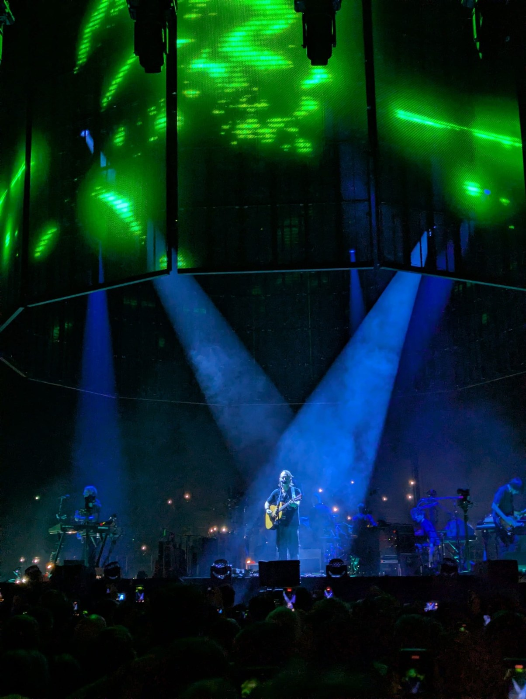
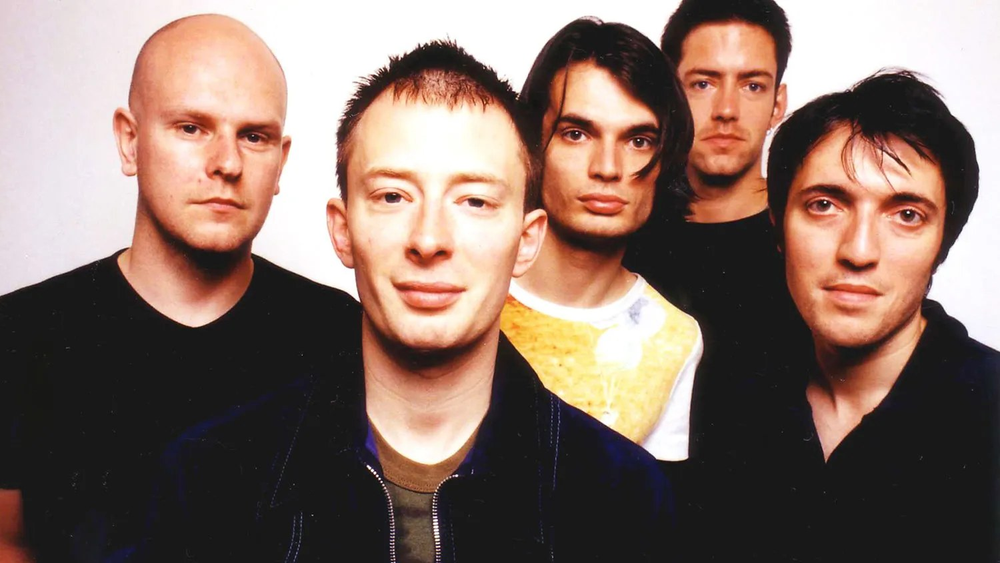
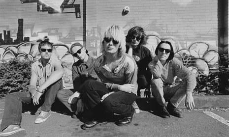
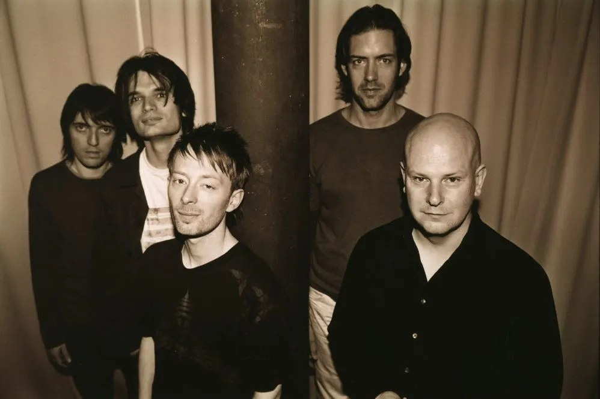
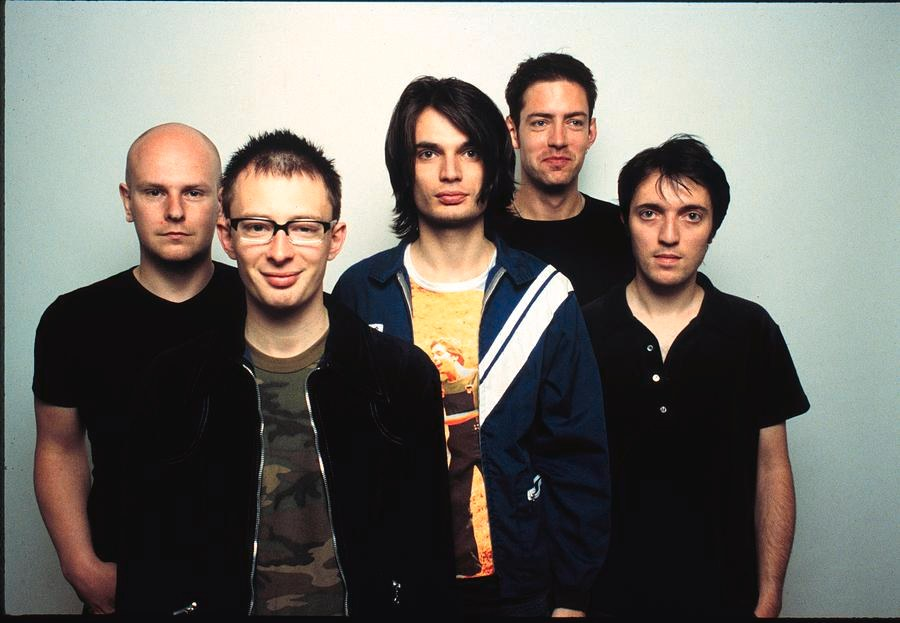

01 / live transmission
Scale, light, tension, silence.
A cinematic anchor image: Radiohead on stage, framed like a cathedral of sound with floating green signals and cold blue beams.
initialising archive
loading sound fragment…
Unofficial fan experience
A premium interactive archive for moving through the band’s albums, visual worlds, and official 30-second preview fragments — built like a dream transmission from Oxford to the end of the internet.
The palette
This section now uses your curated images only — live photography, portraits, and stage atmosphere instead of album covers. The layout is cleaner, lighter, and built to feel like a premium visual board rather than a buggy collage.

A cinematic anchor image: Radiohead on stage, framed like a cathedral of sound with floating green signals and cold blue beams.



Calm expressions, uneasy framing, and that detached stillness that makes the band feel intimate and unreachable at the same time.
Stage shots introduce movement, beams, sweat, and tension — the physical counterpoint to the colder electronic side of the catalogue.
Black-and-white, sepia, green light, and blue glow keep the palette nostalgic but unstable, like a signal fading in and out.
Album biography archive
Each album now has a longer biography, release context, production notes, essential entry tracks, visual mood, and preview shortcuts. Artwork is requested live from Apple/iTunes when the page opens, so the project stays lightweight.

From Oxford noise to orchestral ghosts
Radiohead’s studio catalogue moves like a nervous system: early guitar pressure, widescreen paranoia, electronic collapse, political static, rhythmic warmth, loop-based minimalism, and finally a suspended orchestral afterimage.
1993 / Pablo Honey
Radiohead’s debut captures the band before the later reinventions: loud guitars, direct songwriting, and the first signs of the tension that would define their catalogue.
Interactive layer
The canvas redraws with drifting waves and micro-glitches. When a preview plays, it tries to react to the audio energy.
30-second previews
Previews are loaded live from Apple’s iTunes Search API. If the API is unavailable, the site shows a graceful fallback message.
Now playing
Radiohead preview will appear here.
Music previews and artwork are requested from Apple/iTunes at runtime. This fan site does not host or redistribute full songs.
Fan corner
I’m a big Radiohead fan, and I also post music covers on Instagram. Scan the QR code or open my profile to hear more.